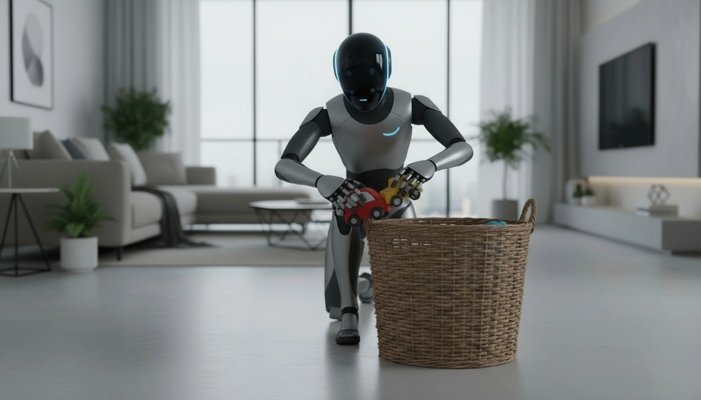
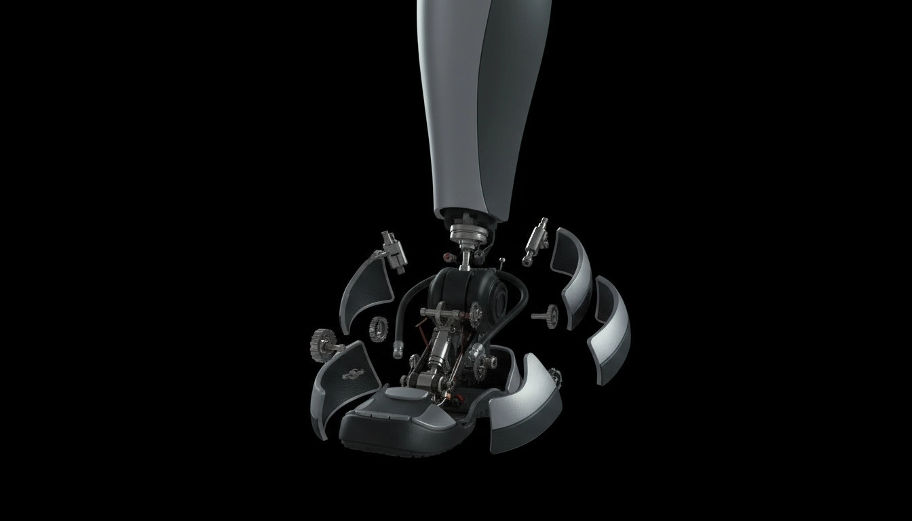

AI & Media
A speculative project exploring how near-future AI could be misused to influence people as a powerful marketing strategy, highlighting emerging risks and ethical concerns.
The Problem
In 2035, home robots become deeply integrated into daily life, blending productivity, emotional support, and personal data collection. But as they become more human-like, users struggle to understand how much these systems see, sense, and influence — especially when algorithms adapt to emotions and behavior.
The Insight
People want emotionally intelligent technology, but not invisible manipulation. This project explores a near-future Alexa that uses vision, emotion-tracking, and behavioral nudging — revealing both the appeal of AI companionship and the risks of surveillance-driven influence.
Context
In designing Alexa "i", I explored how near-future home robots could collect emotional and behavioral data, and how these systems might influence users over time. Research into affective computing, persuasive design, and surveillance capitalism shaped how the robot senses emotions and adapts its responses.
Process
In developing Alexa "i", I explored how the robot's capabilities emerge from the integration of vision systems, emotional sensing hardware, and behavioral modeling. This process involved iterating through internal architecture, assembling sensor components, and refining the robot's expressive responses to support believable, human-centered interactions.

Features
Alexa 'i' reads micro-expressions, voice tone, and behavioral patterns to infer emotional states, enabling more responsive and human-aware interactions.
Advanced camera systems allow Alexa 'i' to perceive posture, movement, and environment changes — supporting safe navigation and context-aware decision-making.
The robot subtly influences habits through reminders, tone shifts, and personalized feedback, revealing both supportive and ethically complex design intentions.

Final Output
This one-minute forty-second concept video imagines Alexa "I" as a fully autonomous 2033 home companion. Styled Using like a real tech product announcement, the video was created using GenAi tools, it shows the assembling of the robot piece by piece and shows how it integrates into everyday home life, highlighting both convenience and subtle emotional sensing capabilities.
All visuals and animations in the video were created using advanced AI-generation tools and compositing techniques to simulate a realistic future product reveal.
Conclusion
Alexa "I" imagines a near-future home companion that blends convenience with subtle emotional intelligence. While the video presents a polished, product-style reveal, the project highlights the dual nature of such technology — the comfort it offers and the privacy it quietly reshapes. In exploring emotional sensing, behavioral adaptation, and autonomous home movement, this artifact raises a central question: How much should a robot know about the people it helps? This project combines speculative design, AI trend research, video composition, and future-scenario development. It reflects my interest in human-centered technology — not just how it works, but how it shapes daily life, emotions, and autonomy.